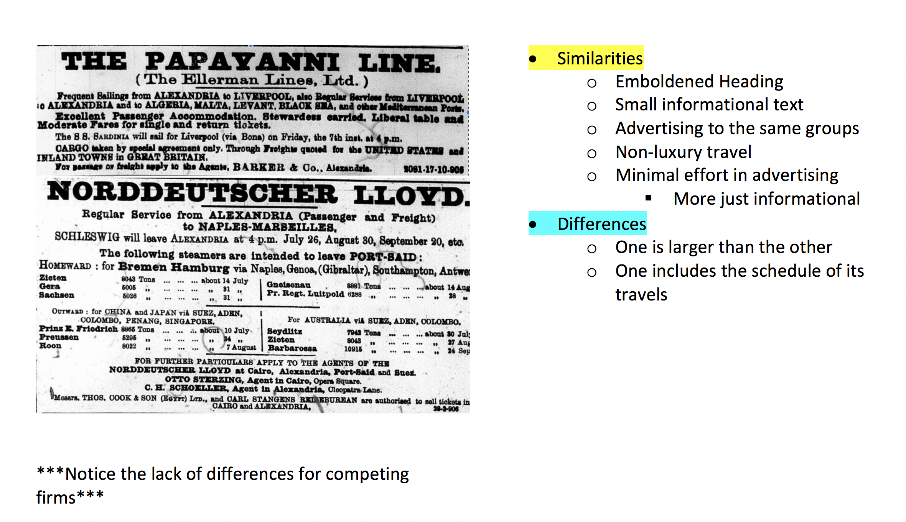

Alexandria Egypt in 1905 kept a record of the news they deemed to be important via their newspaper. The title of the newspaper is “The Egyptian Gazette”. The newspaper kept a general record of the lives of not only the common person, but also the royalty. The third page was usually the most informative because it described the lives of the people, their festivities, their losses, and their own writings. However, I have drawn my focus more to the first page. The cover of “The Egyptian Gazette” provides details that can push us to understand the way the Egyptians lived. The first page is full of advertisements by different companies. The very first things you see when you grab the newspaper are advertisements. The recurring advertisements are, generally speaking, deemed the most crucial or the most well targeted ads. In comparison to modern times, that is what culturally seems to make the most sense. This newspaper was distributed to millions of people all over the city. So my question and intrigue is, why did these ads get put on the first page? Why did companies, assumedly, pay all of this extra money just to have their company advertised on the front page?
The reason I chose to study the advertisements is because the economy has a lot to do with the culture of a civilization. What people choose to buy and sell and the advertisements that are associated with it are a large portion of people’s lives. If a company is willing to spend crucial time, money, and resources to advertise their product or company, then people of that time ,generally, believe that it is quintessential to their lives. Another reason I chose to look into the published advertisements is because I am a business major. I like looking into the trends and fads of certain time periods. The comparison of how things were in 1905 and how they were important to society then, in comparison to the economic activities we partake in now, can be studied and examined to track cultural history. Looking through the advertisements we can see what people find to be desirable and the products society as a whole believes to be invaluable to their lives. The abundance of advertisements gives us ample amounts of material to examine the pieces of people lives and the way society valued specific companies. Each advertisements word choice and their designs were well thought out and planned. That gives us an additional perspective on the civilization. The way they advertise to people is specified and intentional. It is very interesting to me to see that some of the marketing tactics we utilize today were used over one hundred years ago. For these reasons I have chosen to analyze the different genres and the ways in which they are utilized in the society. I really feel that we can get more insight into the lives of people and the fads that were important to them if we look at their possible spending.

In order to answer this question I had to first categorize or at least recognize the different categories of advertisements that were posted on the front page. The Eastern Telegraph advertisement is the very first one to be printed on the first pages. This advertisement falls under the category of communications. The prominency of the add and the fact that it is completely separated from the rest of the page of advertisements could possibly go to show that this was one of the more popular choices for sending information to other cities and countries. There are competing companies that were fighting for business as well. The Khedival Mail Line, Bibby Line Mail Steamers, and the Telephone Company of Egypt are all examples of competing firms. I have found that another major category of advertisements is travel and lodge. Each company is targeting a different group of people and travels to a different place. Some examples of these companies are Norddeutscher Lloyd, The Moss S.S company LLTD., Messageries Maritime, Hotel Brisco in Cairo, and Navigation Generale Ialienne are just a few of the most commonly appearing advertisements about travel and lodge. The excessive amounts of companies that offer travel opportunities can provide us with a wealth of information. It tells us that technological advances are allowing people to access the rest of the world without trouble. It might also tell us that 1905 Alexandria was a thriving time. If people were able to travel and pay the fees that go along with it, especially some of the more luxurious travel companies, then it had to have been a prosperous time. The mail line advertisements can tell us that information was reaching all ends of the world. People had the ability to send a note or a letter and receive one back in a relatively short period of time. This innovation and increase in technology fueled the economy and also allowed for access to pertinent information. This, culturally, goes to show that major advancements were being made to better people’s standard of living. The healthy competition gives us further evidence that there were limited issues with the growth of the economy in Alexandria, Egypt in the year 1905. We can conclude this because businesses would be scarce in an economic decline, whereas in this situation there are many companies in the market.
There is also this idea of a class divide. There are a lot of luxury items being marketed to people, but there are also more economic choices. While some companies target the luxury buyer other companies target the middle to lower class. Each advertisement, through its use of diction and syntax, allows us to see who their targeted audience is going to be. For example, the Norrdeutscher Lloyd company advertises “regular service” to the consumers, whereas the International Sleeping and Restaurant Cars company is more directed towards those looking for a luxurious trip. People who are looking for a fast and cheap traveling experience are not necessarily going to be looking for a train that can supply them with fine dining and a comfortable experience. The division of the classes is a major factor played in advertisements. Companies will tend to embolden words such as “regular” or “luxury” to draw more attention to the intended audience. The Khedival Mail Line uses words such as “express” to differentiate their delivery time from another company. This tactic of differentiation is one that is even still used today. From a cultural stand- point this says the same thing it does about companies today. It says that people want to promote their product in the most efficient and positive way possible.
For the most part, the advertisements on the first page all fit relatively the same mold. Each one advertises their company name in large emboldened text and provides their company description and information in a lot finer print. This can go to show that companies were looking for the most efficient and cheap way of advertising, the most succinct way. Or this could also go to show that the marketing tactics in this time frame and location were not as well developed as you might see now a days. The simplistic form of the advertisement could also just be The Egyptian Gazette having guidelines for what an ad can look like to be included on the front page. There are a lot of unanswered questions still at large, however we can still get a small glimpse into the possible answers and ultimately allows us to see small portions of their culture.
In order to analyze the information and correctly answer my serial question I was forced to draw in some background knowledge on marketing. Being a marketing and finance major, and growing up in a business minded house helped me draw some important conclusions about what some of these ads might tell us. I was able to identify what these advertisements could mean for the society and also what their economy might have been like in 1905. Every advertisement grants small bits of information that can lead us to drawing important conclusions. The conclusions can be anything from the evolution of marketing tactics and how different cultures might use different techniques to what these advertisements mean for their culture and ultimately their civilization.
In conclusion I found the advertisements to be quintessential to analyzing crucial aspects of their culture and economy. They provide evidence of economic and technological advancements and where they were in relativity to the rest of the world in 1905. I discovered that the economy appeared to be booming due to the abundance of businesses, the division by social class, and the money spent on advertising to consumers. None of those would have been possible had the city been in a recession. Also I was able to find that transportation, lodging, mail, and insurance were all very important to the people of that time. The majority of the advertisements fell under one of those categories. This proved to me that people’s main concerns weren’t necessarily fashion or large houses, but they were looking for information and means of travel. These are all pieces of a bigger puzzle, and when we put them together we can see what life was like in Alexandria, Egypt in the year 1905.